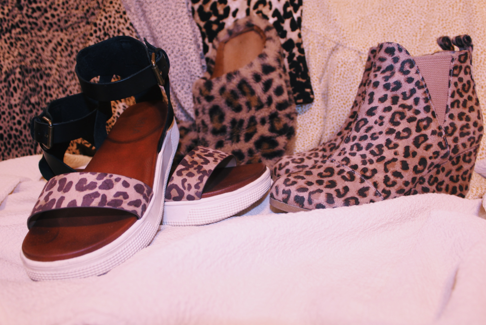
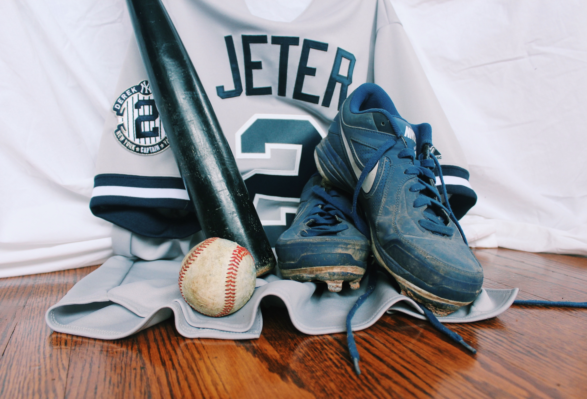

Kobe Bryant Memorial
Dedicated to one of the best basketball players in the history of the NBA, Kobe Bryant’s exhibit features the sneakers Bryant wore in the 2010 NBA championship game. Take a look at the shoes the LA Lakers superstar wore to help lead his team to the top.

Cheetah Sisters
Featuring the shoes worn at the kickoff show of the One World tour, you’ll be able to celebrate the iconic girl group that was The Cheetah Girls. Get up close and personal to the shoes worn by Adrienne Bailon, Sabrina Bryan, and Kiely Williams.

Derek Jeter's MVP Season
Take a look at Derek Jeter’s game-worn cleats from the 2000 World Series Game 1: New York Yankees vs. New York Mets. Along with the cleats are the bat and jersey that he used in game.